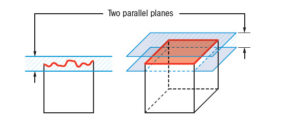

A planicidade em GD&T indica quão plana
uma superfície deve ser.
Ela é util para garantir que
uma superfície seja plana sem afetar outras dimensões no
desenho.
A tolerância de planicidade define uma zona entre dois planos
paralelos onde a superfície deve estar, e essa tolerância é
smpre menos que a tolerânicia dimensional.
ZONA DE TOLERÂNCIA
Dois planos paralelos entre si definem a tolerância de planicidade.

PODE USAR DATUM?
NÃO
PODE USAR MODIFICADORES?
SIM
COMO ESPECIFICAR RETITUDE DE SUPERFÍCIE
COMO MEDIR A PLANICIDADE DE UMA SUPERFÍCIE PLANA
RESULTADO DO ERRO DE FORMA ENCONTRADO
A planicidade não pode simplismente ser medida sendo referenciada em uma referência plana e depois medir a superfície oposta pois dessa forma não estaria avaliando o erro de forma da superfície mas sim o paralelismo (orientação) entre os planos.
RELAÇÃO COM OUTROS CONTROLES
RETITUDE DE SUPERFÍCIE
A planicidade é uma versão tridimensional da retitude de superfície.
A planicidade é utilizada para limitar
a ondulação (erro de forma) de uma superfície sem alterar
sua tolerância
dimensional (tamanho).
RELAÇÃO COM O PARALELISMO
O paralelismo garante que uma
superfície ou linha esteja paralela a outra (referência).
A planicidade pode e deve ser um pré-requisito para o
paralelismo, pois uma superfície plana de referência tem
mais garatia de controlar a orientação do plano a ser
controlado do que uma referência com um erro de forma
irregular.
E embora tenha uma relação implicita, uma observação muito importante é que a planicidade não é o mesmo que paralelismo.
RELAÇÃO COM A RETITUDE
A retitude refere-se à linearidade de uma linha ou superfície. Enquanto a planicidade se aplica a superfícies planas, a retitude pode se aplicar tanto a linhas quanto a superfícies, garantindo que elas sejam retas.
RELAÇÃO COM A ANGULARIDADE
A angularidade define a inclinação de uma superfície ou linha em relação a uma referência. A planicidade pode ser importante para garantir que a superfície inclinada seja uniforme, assim como para o controle de paralelismo.
RELAÇÃO COM PERFIL DE SUPERFÍCIE
O perfil de superfície controla a forma de uma superfície complexa. A planicidade pode ser uma parte do controle de perfil de superfície, garantindo que certas áreas da superfície sejam planas.